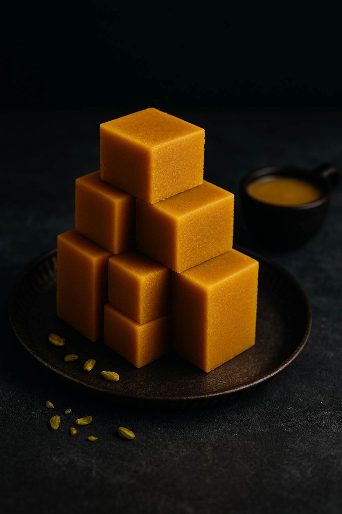

MysorePak

Home
Description
Ghee Mysore Pak is a rich South Indian sweet made with generous amounts of ghee, gram flour, and sugar. Famous for its crumbly-yet-soft texture, it’s a true royal treat from Mysore, Karnataka.
Traditionally served in special functions and festivals, Mysore Pak is known for its irresistible aroma of roasted gram flour and the golden color from pure ghee. The taste is so divine, it’s hard to stop at just one piece.
Ingredients
- 1 cup gram flour (besan)
- 1 cup ghee (clarified butter)
- 1 cup sugar
- ½ cup water
Steps
- Sieve gram flour to remove lumps.
- Heat ghee in a pan until hot.
- In another pan, boil sugar and water until one-string consistency.
- Add gram flour slowly, stirring continuously to avoid lumps.
- Gradually pour hot ghee in small batches, mixing well.
- When the mixture turns frothy and leaves the sides, pour into a greased tray.
- Let it set slightly, cut into pieces, and allow to cool completely.